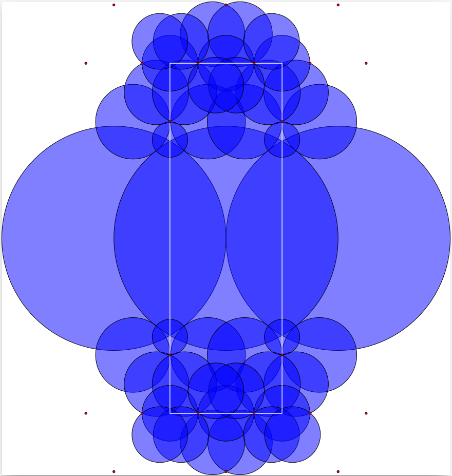
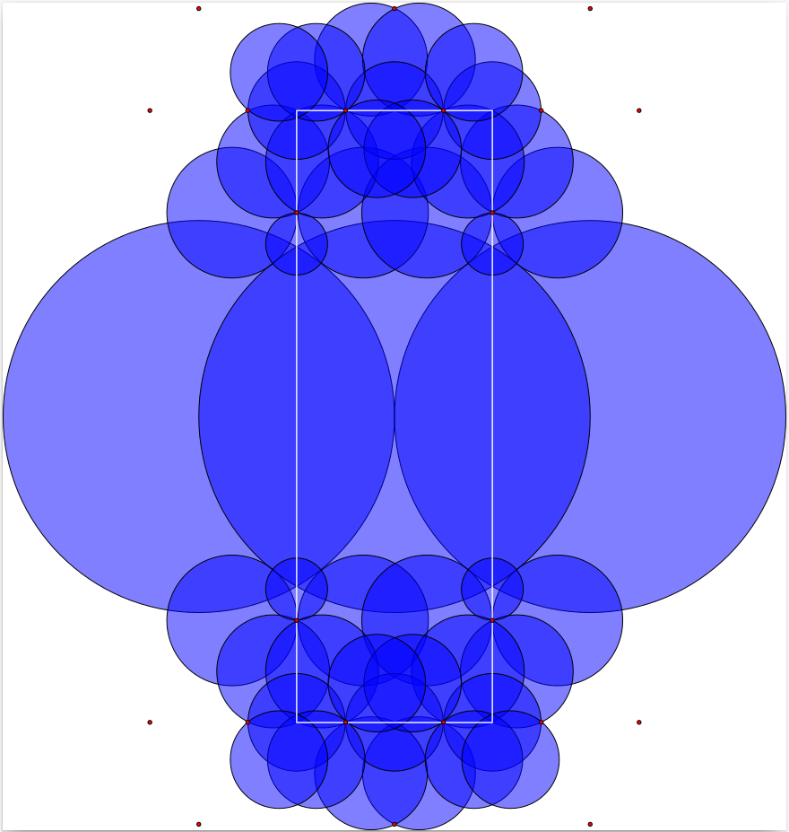
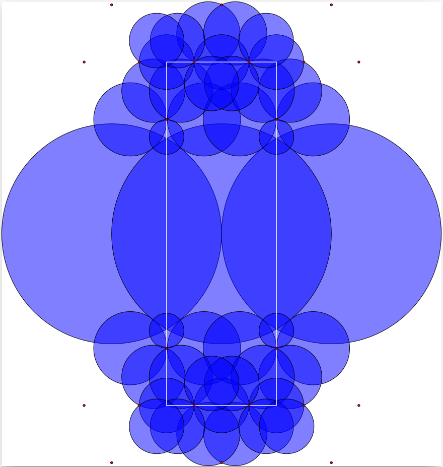
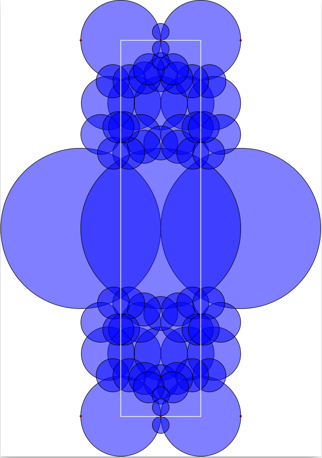
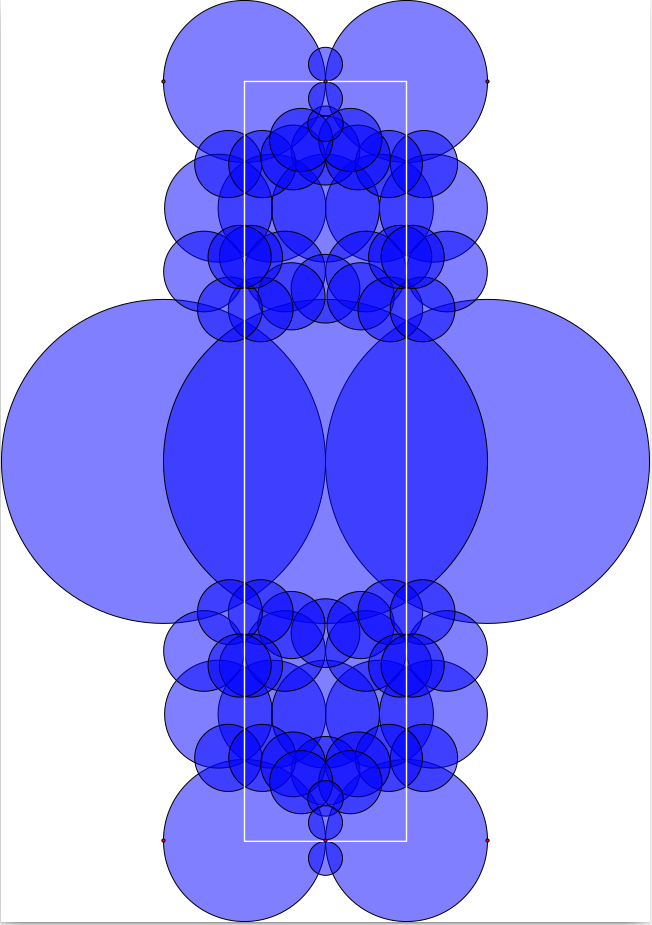

The Bianchi groups are the groups G_-d=PSL_2(cal O_-d) where d is a square free positive integer and cal O_-d is the ring of integers of the imaginary quadratic field Q(sqrt-d). These groups act on upper-half space
{\frak h}^3 =\{(z,t) \in \mathbb C\times \mathbb R\ |\ t > 0\}
by the formula
\left(\begin{array}{ll}a&b\\ c &d \end{array}\right)\cdot (z+tj) \ = \ \left(a(z+tj)+b\right)\left(c(z+tj)+d\right)^{-1}\
where we use the symbol j satisfying j^2=-1, ij=-ji and write z+tj instead of (z,t). Alternatively, the action is given by
\left(\begin{array}{ll}a&b\\ c &d \end{array}\right)\cdot (z+tj) \ = \ \frac{(az+b)\overline{(cz+d) } + a\overline c t^2}{|cz +d|^2 + |c|^2t^2} \ +\ \frac{t}{|cz+d|^2+|c|^2t^2}\, j \ .
We take the boundary ∂ frak h^3 to be the Riemann sphere C ∪ ∞ and let overlinefrak h^3 denote the union of frak h^3 and its boundary. The action of G_-d extends to the boundary. The element ∞ and each element of the number field Q(sqrt-d) are thought of as lying in the boundary ∂ frak h^3 and are referred to as cusps. Let X denote the union of frak h^3 with the set of cusps, X=frak h^3 ∪ {∞} ∪ Q(sqrt-d). It follows from work of Bianchi and Humbert that the space X admits the structure of a regular CW-complex (depending on d) for which the action of G_-d on frak h^3 extends to a cellular action on X which permutes cells. Moreover, G_-d acts transitively on the 3-cells of X and each 3-cell has trivial stabilizer in G_-d. Details are provided in Richard Swan's paper [Swa71b].
We refer to the closure in X of any one of these 3-cells as a fundamental domain for the action G_-d. Cohomology of G_-d can be computed from a knowledge of the combinatorial structure of this fundamental domain together with a knowledge of the stabilizer groups of the cells of dimension ≤ 2.
A pair (a,b) of elements in cal O_-d is said to be unimodular if the ideal generated by a,b is the whole ring cal O_-d and ane 0. A unimodular pair can be represented by a hemisphere in overlinefrak h^3 with base centred at the point b/a ∈ C and of radius |a|. The radius is ≤ 1. Think of the points in frak h^3 as lying strictly above C. Let B denote the space obtained by removing all such hemispheres from frak h^3.
When d ≡ 3 mod 4 let F be the subspace of overlinefrak h^3 consisting of the points x+iy+jt with -1/2 ≤ x ≤ 1/2, -1/4 ≤ y ≤ 1/4, t ≥ 0. Otherwise, let F be the subspace of overlinefrak h^3 consisting of the points x+iy+jt with -1/2 ≤ x ≤ 1/2, -1/2 ≤ y ≤ 1/2, t ≥ 0.
It is explained in [Swa71b] that F∩ B is a 3-cell in the above mentioned regular CW-complex structure on X.
Explicit fundamental domains for certain values of d were calculated by Bianchi in the 1890s and further calculations were made by Swan in 1971 [Swa71b]. In the 1970s, building on Swan's work, Robert Riley developed a computer program for computing fundamental domains of certain Kleinian groups (including Bianchi groups). In their 2010 PhD theses Alexander Rahm and M.T. Aranes independently developed Pari/GP and Sage software based on Swan's ideas. In 2011 Dan Yasaki used a different approach based on Voronoi's theory of perfect forms in his Magma software for fundamental domains of Bianchi groups. Aurel Page developed software for fundamental domains of Kleinian groups in his 2010 masters thesis. In 2018 Sebastian Schoennenbeck used a more general approach based on perfect forms in his Magma software for computing fundamental domains of Bianchi and other groups. Output from the code of Alexander Rahm and Sebastian Schoennenbeck for certain Bianchi groups has been stored iin HAP for use in constructing free resolutions.
More recently a GAP implementation of Swan's algorithm has been included in HAP. The implementation uses exact computations in Q(sqrt-d) and in Q(sqrtd). A bespoke implementation of these two fields is part of the implementation so as to avoid making apparently slower computations with cyclotomic numbers. The account of Swan's algorithm in the thesis of Alexander Rahm was the main reference during the implementation.
The fundamental domain D=overlineF ∩ B (where the overline denotes closure) has boundary ∂ D involving the four vertical quadrilateral 2-cells contained in the four vertical quadrilateral 2-cells of ∂ F. We refer to these as the vertical 2-cells of D. When visualizing D we ignore the 3-cell and the four vertical 2-cells entirely and visualize only the remaining 2-cells. These 2-cells can be viewed as a 2-dimensional image by projecting them onto the complex plane, or they can be viewed as an interactive 3-dimensional image.
A fundamental domain for G_-39 can be visualized using the following commands.
gap> D:=BianchiPolyhedron(-39); 3-dimensional Bianchi polyhedron over OQ( Sqrt(-39) ) involving hemispheres of minimum squared radius 1/39 and non-cuspidal vertices of minimum squared height 10/12493 . gap> Display3D(D);; gap> Display2D(D);;

A cusp vertex of D is any vertex of D lying in C ∪ ∞. In the above visualizations for G_-39 several cusp vertices in C are : in the 2-dimensional visualization they are represented by red dots. Computer calculations show that these cusps lie in precisely three orbits under the action of G_-d. Thus, together with the orbit of ∞ there are four distinct orbits of cusps. By the well-known correspondence between cusp orbits and elements of the class group it follows that the class group of Q(sqrt-39) is of order 4.
A fundamental domain for G_-22 can be visualized using the following commands.
gap> D:=BianchiPolyhedron(-22);; gap> Display3D(OQ,D);; gap> Display2D(OQ,D);;
 

Two cusps are visible in the visualizations for G_-22. They lie in a single orbit. Thus, together with the orbit of ∞, there are two orbits of cusps for this group.
A fundamental domain for G_-163 can be visualized using the following commands.
gap> D:=BianchiPolyhedron(-163);; gap> Display3D(OQ,D);; gap> Display2D(OQ,D);;


There is just a single orbit of cusps in this example, the orbit containing ∞, since Q(sqrt-163) is a principle ideal domain and hence has trivial class group.
A fundamental domain for G_-33 is visualized using the following commands.
gap> D:=BianchiPolyhedron(-33);; gap> Display3D(OQ,D);; gap> Display2D(OQ,D);;


generated by GAPDoc2HTML